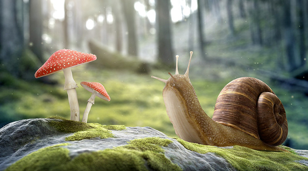

<!--
  This template loads for the 'tab.friend-detail' state (app.js)
  'friend' is a $scope variable created in the FriendsCtrl controller (controllers.js)
  The FriendsCtrl pulls data from the Friends service (service.js)
  The Friends service returns an array of friend data
-->
<ion-view view-title="项目详情">
	<ion-content>
		<div class="detail-special">
			<ul class="detail-special-banner">
				<li>
					
				</li>		
			</ul>
			<div class="detail-special-info pd-lr">
				<div class="border-b1 pd-tb">
					
					<span class="left color-88">Tao.生态科技研究院</span>
					<span class="right color-88">2016/10/01 15:22</span>
				</div>
			</div>
		</div>

	</ion-content>
</ion-view>
